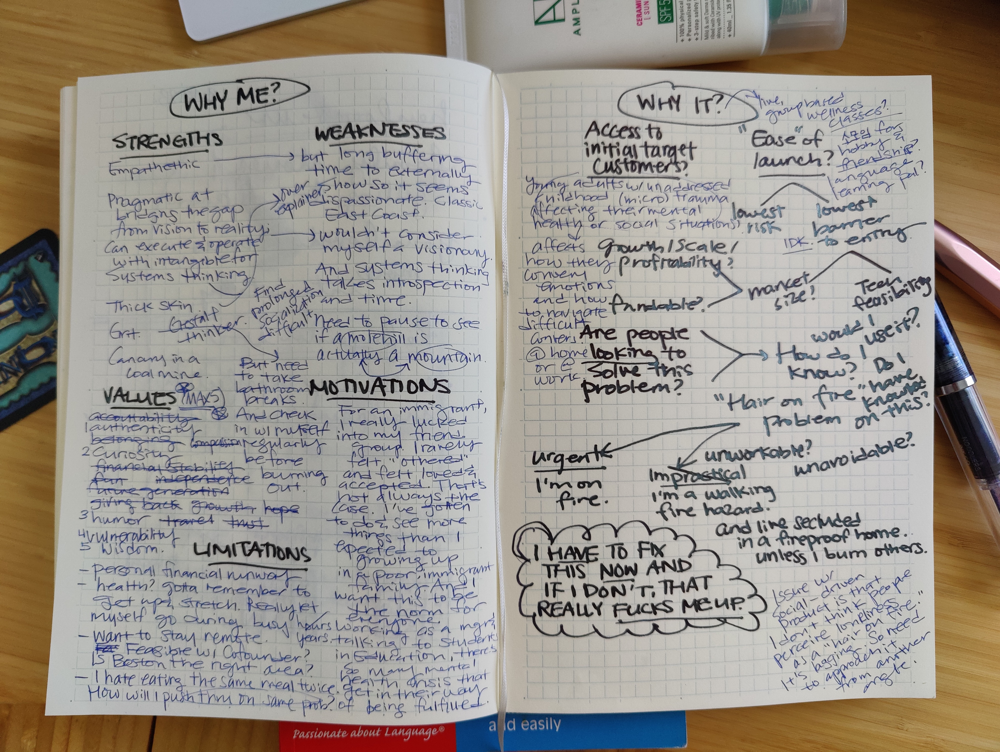
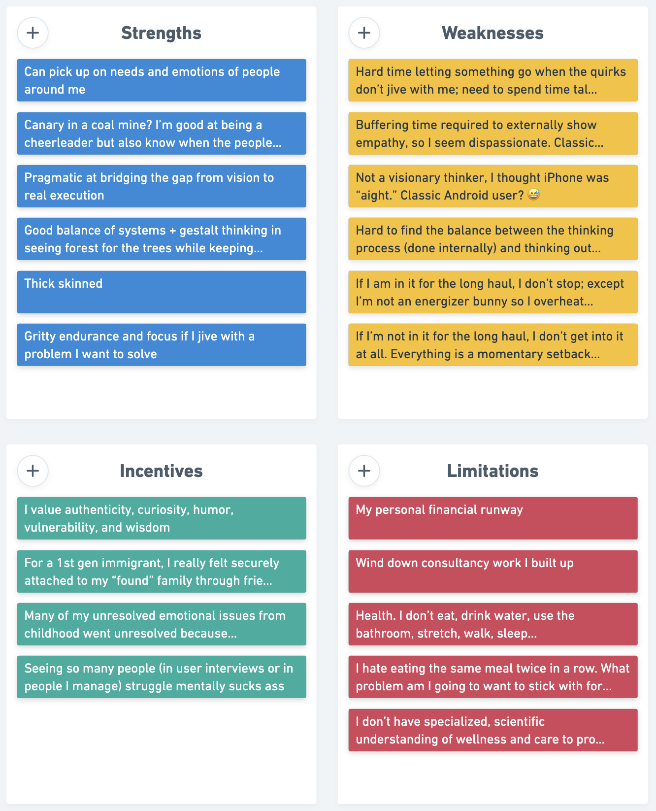

If I had a dollar for every time someone told me they wanted to break away from the corporate rat race to be their own boss, I would be able to afford a home and an avocado toast for breakfast. If I had another dollar for every time someone told me they had a unicorn idea in their head that’s ready for takeoff, I would master the art of quiet luxury fashion completely from head to toe.
Not too long ago, I applied for a founder residency program at Antler, a “day zero investor.” For the interview preparation, I’ve spent most of my time thinking about my fit above all else.
My goal for 2023 was always twofold: establish a consistent stream of income and start working on an idea I’m passionate about. But as the sage Ron Swanson once said, you shouldn’t half ass two things and whole ass one thing instead.
So am I in the right frame of mind to actually commit to working on my idea wholly or is this a fleeting wannapreneurship fever dream? To evaluate myself, I completed a SWIL analysis.
SWIL analysis
My SWIL analysis (stands for Strengths, Weaknesses, Incentives and Limitations) borrows from the SWOT analysis framework. Unlike SWOT, where the analysis is done by identifying both internal and external factors, I used SWIL to look inwardly at myself to determine the impact I can make and the viability of me working on a new startup idea. As such, opportunities and threats are replaced with incentives and limitations, where:
- Incentives describe my values and motivations, and
- Limitations describe my personal limitations and situations that may hinder my progress.
 First draft was a brain dump
 This is my organized SWIL notes. You can read it in full here
The biggest challenge I had was defining my values. The process of introspection felt confusing; I often didn’t know how to differentiate between certain values. I’m still not sure I picked the right ones. To do this, I borrowed from Dr. Brown’s body of work.
Takeaway
Ultimately, I recognized that my bias for action led to achieving consistent stream of income. But by exerting my time, energy, and focus towards this goal, I’ve shown two classic signs of a wannapreneur:
- Constant idea generation with commitment issues where I don’t stick with one idea for long. I keep brainstorming new concepts as I talk to people and it’s been awhile since I’ve taken steps towards execution beyond prototype testing.
- No concrete plans with inconsistent efforts around execution. All my executive functioning skills are used up for consulting and business development. Working on my idea has been too sporadic.
So I’m going to take the first step to address this issue by going whole ass on executing against my idea; I’m joining Antler for their fall cohort. If you’re also interested in this thought exercise before you make the jump to something scary and exciting, try this and let me know how it goes.